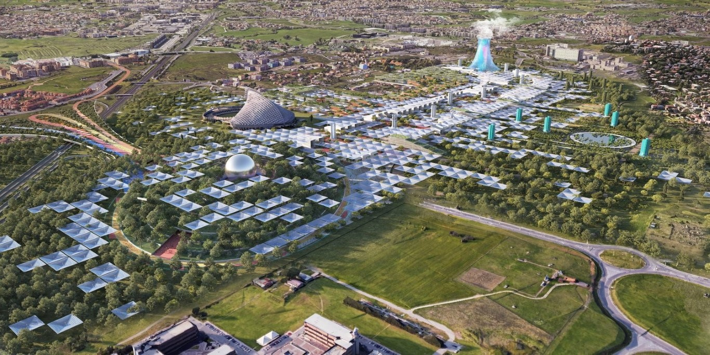

El proyecto de la granja solar urbana más grande del mundo ya está siendo concebido por CRA-Carlo Ratti Associati, el arquitecto, Italo Rota y el urbanista Richard Burdett.
Una propuesta para la Expo 2030 de Roma que promete revolucionar el diseño urbano aprovechando las energías renovables y apostando a un sistema cooperativo entre países.
El modelo consiste en una granja solar en donde cada país ayude para abastecer de energía a toda la exhibición y contribuir con la descarbonización de los barrios vecinos.
El objetivo es armar una estructura de paneles solares sobre una cubierta vegetal que abarque un área de 150.000 metros cuadrados, lo que la convertiría en la más grande en todo el mundo, que proveerá de energía y sombra a todos aquellos que visiten la exposición. Esta energía, además de ser limpia, renovable y gratuita, ayuda a purificar el aire del entorno que nos rodea. Algo que, sin duda, las ciudades pueden imitar.
Los arquitectos y diseñadores detrás del proyecto lo definen como “una utopía factible” que puede ser un inicio del futuro de las redes de energía. Para llevar a cabo esta obra, la tecnología y el ecosistema natural deben encontrarse. Esto refleja hacia dónde se dirige la arquitectura y cómo las nuevas tecnologías pueden convertirse en una herramienta para alcanzar la sostenibilidad dentro de la industria.
Este modelo implica una sincronía entre lo natural y lo artificial, para potenciarse mutuamente. Por ejemplo, en este caso, el diseño plantea la disposición de los paneles solares mezclados entre los árboles.
La Expo 2030 promete grandes avances en el ámbito de la sustentabilidad y la tecnología bajo la temática “Gente y territorios, juntos: regeneración urbana, inclusión, e innovación”, y pretende ser fuente de inspiración para la evolución del desarrollo urbano hacia la regeneración.